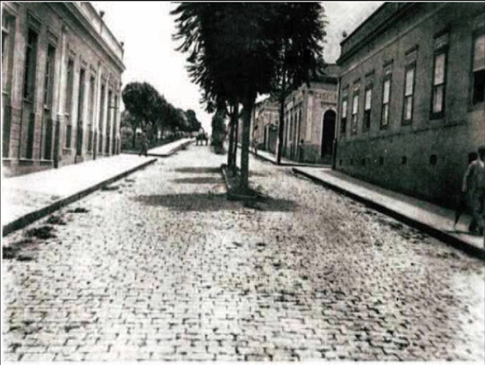
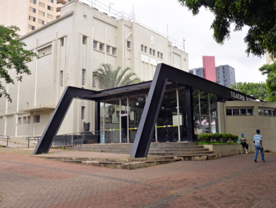

Sobre Limeira
História
Limeira, localizada no interior do estado de São Paulo, teve suas origens no início do século XIX, quando foi formada como uma pequena povoação ligada à sesmaria do Capitão Luiz Manoel da Cunha Bastos. Em 1826, foi elevada à categoria de freguesia e, em 1863, tornou-se município. A cidade ganhou destaque histórico por ser um dos primeiros polos produtores de café no Brasil, além de ter sido uma das pioneiras na imigração italiana, que teve grande influência no desenvolvimento local. Com o passar dos anos, Limeira se modernizou, sem perder suas raízes históricas ligadas ao campo e à agricultura.
Economia
Conhecida como a “Capital da Joia Folheada”, Limeira é um dos maiores polos de produção de bijuterias e semijoias da América Latina. A economia da cidade é diversificada, com forte presença dos setores industrial, agrícola, comercial e de serviços. O cultivo de cana-de-açúcar e citros ainda tem papel importante, mas hoje a cidade também abriga indústrias de autopeças, metalurgia, confecções e tecnologia. O dinamismo econômico de Limeira atrai investimentos e gera milhares de empregos, consolidando seu papel estratégico na região.
Cultura
A cultura limeirense é rica e plural, fruto da mistura de diferentes influências, especialmente da imigração europeia, como italianos, portugueses e alemães. A cidade preserva seu patrimônio histórico em casarões antigos, igrejas e praças tradicionais. Eventos culturais como o “Festival Nossa Arte”, a tradicional Festa do Senhor Bom Jesus e apresentações da Orquestra Sinfônica de Limeira demonstram o vigor da produção artística local. Além disso, Limeira conta com espaços culturais como o Teatro Vitória, o Museu Histórico e Pedagógico e centros de formação artística que valorizam a educação e expressão cultural.
